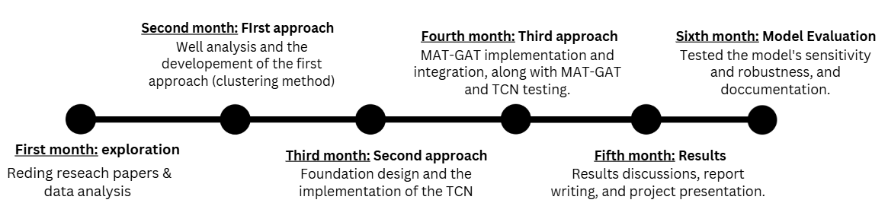

Drill-X Project
Project Context:
The project aims to detect anomalies (stuck events) occurring during drilling, which cost the company tens of millions of dollars annually. An existing solution has been in place for years, but it has recently struggled with false alarms and missed detections.
Data Type: Time-series data, typically sensor data such as the hook load of the drilling rig.
My Mission:
The TotalEnergies Digital Factory (TDF) team decided to address the project's challenges academically by exploring a new technique: soft-labeling. My mission was to implement and evaluate approaches using soft-labeled data, where labels represent probabilities instead of binary values (0 or 1). This required extensive research, including reviewing state-of-the-art papers and applying advanced techniques.
Project Challenges:
- Data imbalance: The dataset is highly imbalanced, with normal data vastly outnumbering anomaly events.
- Unfiltered activity data: Collected data includes both activity and non-activity data, increasing complexity.
- Uncertainty in stuck reporting: Stuck events are recorded, but the exact timing is often unclear.
- Pattern ambiguity: Near-stuck patterns complicate detection, as some events are resolved before becoming actual stucks.
Project Assets:
- Significance: The project is crucial for the company's core activities, saving substantial costs while enhancing its AI capabilities.
- Resources: Well-documented processes and access to cutting-edge tools, including distributed computing on Azure Databricks and MLflow for model tracking.
Achievements:
- Applied K-Means and DBSCAN clustering on signal features extracted with Tsfresh to group similar patterns.
- Trained a neural network on features extracted by Tsfresh. The model faced challenges with dimensionality and parameter updates.
- Developed and tested a Temporal Convolutional Network (TCN) for stuck prediction, reducing false alarms but with room for improvement.
Timeline:
- First Month: Explored the project context, reviewed research papers, and conducted initial analyses.
- Second Month: Developed the first approach using Tsfresh for feature extraction and clustering with K-Means and DBSCAN.
- Third Month: Trained neural networks, including a Temporal Convolutional Network, on extracted features.
Tools and Experience:
- Data Manipulation & Analysis: Pandas, NumPy
- Big Data & Distributed Computing: Apache Spark, Databricks
- Machine Learning & Deep Learning: PyTorch, MLflow
- Data Visualization: Matplotlib